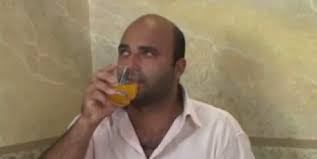

Curriculo
Felipe Ferreira Dos Santos
Brasileiro, Casado, 24 anos.
Objetivo
Front-End Developer, Desenvolvedor Front End, Webdesigner,UX/UI Designer, Back end
Experiência profissional
Celma De Assis Rossato E Cia Ltda. - 08/03/2013 a 23/01/2017
Alimentador de Linha de Produção
Realizar cortes de tecidos para alimentar o setor de Corte. Produzir encaixes para tecido de acordo com a peça piloto do mostruário destinada ao setor CAD pelo setor PCP.
Renato W Gonçalves Confecções Eireli. - 07/08/2017 a 05/05/2019
Fiscal de Loja
Realizar a Fiscalização da loja, assim impedindo que furtos acontecessem no local. Auxiliava no estoque da loja e serviços gerais.
Pratti Donaduzzi e Cia LTDA.-Atuado
Técnico 01 (CQ-BPL)
Controle e armazenamento de reagentes.
Formação
Graduação em Analises e Desennvolvimento de Sistemas
Cursando
Cursos / Especializações
-
Técnico em Química-Colégio Estadual Luiz Augusto Morais Rego-2017 a 2019 (Completo)
-
Hplc, Css e Java Script.-Prepara Cursos. – Em andamento.
-
Curso Web Design Completo: HTML5, CSS3 e JS + 5 Projetos
-54,5(Em processo)
- Wise up Inglês: Básico(Em processo)